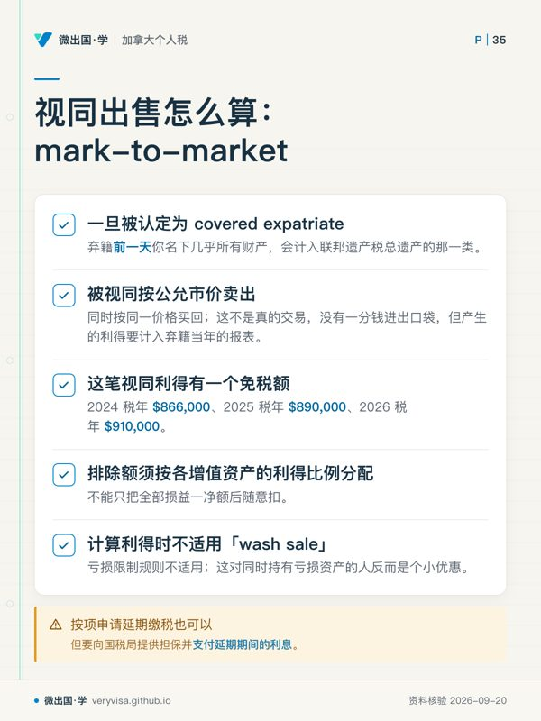
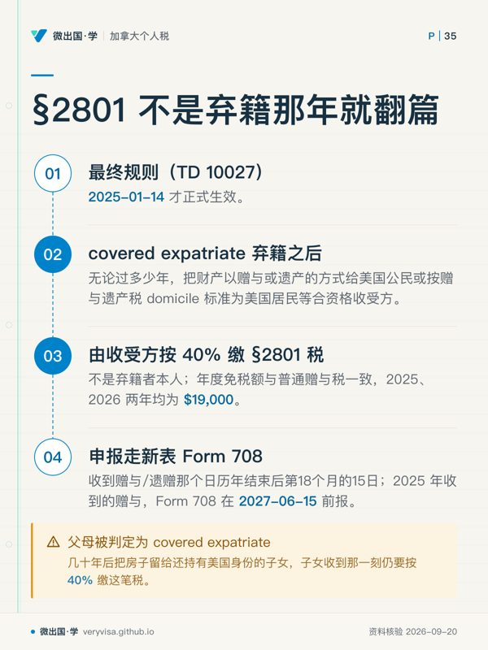
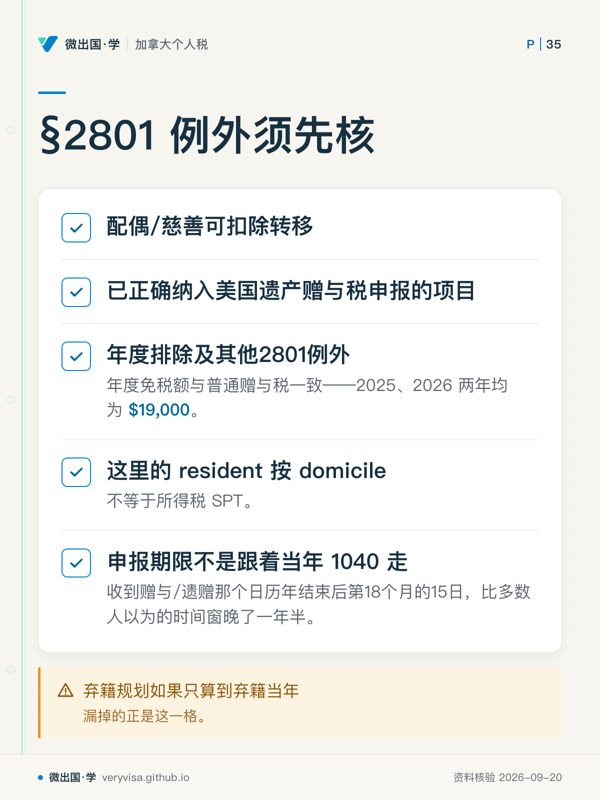

核实日期：2026-09-05｜本页现行口径＝2026 税年（2027 年春申报）。 复核周期：§877A 的两项金额门槛每年秋季随通胀调整（2027-01-31 前复查新一年的 Revenue Procedure）；三门槛的机制、§2801 的存在与税率、领事馆流程属长青或按公告变化项，随事件复核。
这一页写给正在认真考虑放弃美国公民身份、或打算交回绿卡的加拿大居民：住在温哥华几十年、孩子在加拿大出生、名下资产早就以加拿大为主的美国公民；或者当年为工作办了绿卡、后来定居加拿大再也没搬回去的长期居民。他们的问题不是「值不值得放弃」——那是一个只有本人能做的决定——而是「放弃这件事本身，在美国税法上会触发什么，触发的东西要花多少钱、拖多久」。这一页要说清三件事：谁会被算作要交这份「弃籍税」的人（covered expatriate）、这笔税具体怎么算（视同出售全部财产、退休账户与递延报酬另有算法）、以及放弃之后还有哪些义务不会随身份一起消失。读完你应该能做到：把一个具体的人放进三门槛里判出他是不是 covered expatriate；说清视同处置与退休账户两条算法的区别；准确回答那个最容易被误解的问题——弃籍税是不是弃籍那一年一次性的事（不是）。
✕
先记住这三条，本页其余内容都挂在它们上面
第一，「放弃身份」这件事本身不用交联邦税，触发弃籍税的是被认定为 covered expatriate。 大多数身家普通、按时报税的人放弃美国身份不会欠一分弃籍税——但仍然要填 Form 8854，填错或不填本身就有罚款。 第二，三门槛里最容易被忽略的是第三条：五年税务合规证明。 净资产再低、平均税负再少，只要没能在 Form 8854 上证明过去五年联邦税务义务已经合规，照样被认定为 covered expatriate（IRS）。 第三，弃籍税不是弃籍那一年的一次性句号。 §2801 规定 covered expatriate 弃籍之后无论过多少年，把财产赠与或遗留给美国人，符合2801范围且超过年度排除、无其他例外的收受方可能按40%缴税——这条 2025 年才最终落地，考试口径完全没有覆盖（Federal Register / IRS（TD 10…）。
一、制度设计与底层逻辑：为什么放弃身份要先跟国税局结一次账
1.1 问题出在哪里
美国是全世界少数按公民身份（而非居住地）征税的国家之一：只要是美国公民或绿卡持有的长期居民，无论住在哪里、多少年没踏进美国国土，全球所得都要报 1040。这套制度天然会催生一个诱因——身家越大、跟美国关系越远的人，放弃身份能省下的终身税负就越可观。1996 年之前，美国的应对办法很粗糙：放弃国籍之后十年内仍按公民身份征税，前提是国税局能证明你是「为了避税」才放弃的（这个举证责任几乎从没被真正用出来过）。
2008 年的《英雄补偿与救济税收法案》(Heroes Earnings Assistance and Relief Tax Act, HEART Act) 把整套逻辑换掉了：不再纠结「你是不是为了避税才走」，改成在你放弃身份的那一刻，把你名下几乎全部财产视同按公允市价卖掉一次，按资产原有所得性质计算视同处置税，不保证全部资本利得——这就是现在写进《国内税收法典》(Internal Revenue Code, IRC) §877A 的「视同出售」(mark-to-market) 机制。逻辑上它更像是「关账」而不是「惩罚」：你身为美国纳税人期间积累的增值，趁着你还是纳税人的最后一刻结清；之后你不再是美国税务居民，美国也就不再追那部分增值的税。
1.2 谁与谁在博弈
这条规则的核心张力在于「身份可以放弃，但已经积累的税基不能一起放弃」。国税局的立场很直接：全球征税制度成立的前提是没人能靠改身份把已经发生的增值一笔勾销带走。对纳税人一方，代价是放弃身份这件本可以「说做就做」的事，被绑上了一次强制的、按当天市价计算的实际税负——哪怕一分钱都没有真的卖出、真的拿到手。
历史立法动机不能代替当前条件。2008年HEART Act同时加入877A与2801；本页不再把1996年Reed条款与2013年未通过提案混作同一“Reed草案”，也不拿后来的提案倒推2008年法律的成因。
1.3 错报的法律后果
Form 8854 是在罚款条款下运作的，不是「建议提交」：该报未报、报了但信息不全或有误，每年罚 $10,000（能证明有合理理由且非故意疏忽的除外，IRS）。更贵的后果藏在一个容易被忽略的地方——如果你符合三门槛之一被认定为 covered expatriate 却没意识到、没按规则申报视同处置的利得，这笔本该在弃籍当年结清的税会一直挂着，利息通常从相应税款法定到期日算；延期项目按适用规则核；等国税局主动发现，往往已经过去好几年，利息滚出来的金额可能远超本金。
二、2026 税年现行规则与数字：谁是 covered expatriate，怎么算
2.1 两类「弃籍者」，先分清楚
IRC 把要交这份税表的人统称 expatriate，但它其实是两类完全不同的人合并处理：
放弃美国公民身份的人——通过宣誓放弃 (renunciation)、书面声明放弃 (relinquishment)、或被美国法院取消入籍证书。
终止长期居民身份的绿卡持有人（long-term resident, LTR）——LTR定义见877(e)(2)/877A(g)(5)，7701(b)(6)处理合法永久居民身份终止：：在结束 LTR 身份那一年为止的最近 15 个纳税年度里，至少8个税年中任何部分持合法永久居民身份；不是必须8个整年。判定这 8 年时，依条约主张自己是外国税务居民、且没有放弃该条约待遇的年度不计入——但反过来，光是住在有条约的国家里并不构成放弃绿卡本身；要真正跳出「持卡即算一年」的计数，必须同时做到三件事：依条约主张外国税务居民身份、不放弃该条约对该国居民的相应待遇、并在 Form 8833 与 Form 8854 上向国税局申报这个立场（Federal Register / IRS（TD 10… 附带说理沿用同一套 §877A 框架）。
一个常被误解的地方：绿卡持有人如果只是让绿卡过期、或者干脆不再入境，并没有通过 Form I-407 正式交回绿卡、也没有被法院或移民局判定放弃，在美国税法上仍然被视为持有绿卡——LTR 身份不会因为「事实上不再是移民」而自动结束，年度申报义务也不会自动停止。
2.2 covered expatriate 三门槛

不是所有 expatriate 都要交弃籍税——只有落进「covered expatriate」这个子集里的人才会触发 §877A 的视同处置。三门槛任满足其一即落入：
| 门槛 | 2024 税年 | 2025 税年 | 2026 税年（现行） | 是否指数化 |
|---|---|---|---|---|
| 弃籍前五年平均年净所得税须超过 | 201,000 美元（2024 税年；已生效；官方公布值） | 206,000 美元（2025 税年；已生效；官方公布值） | 211,000 美元（2026 税年；已生效；官方公布值） | 是，每年随通胀调整（IRS（1、2、3）） |
| 弃籍日净资产达到或超过 | 2,000,000 美元（2024 税年；已生效；官方公布值） | 2,000,000 美元（2025 税年；已生效；官方公布值） | 2,000,000 美元（2026 税年；已生效；官方公布值） | 否，法定固定值，五年未变（IRS） |
| MTM利得排除（不是covered资格线） | 866,000 美元（2024 税年；已生效；官方公布值） | 890,000 美元（2025 税年；已生效；官方公布值） | 910,000 美元（2026 税年；已生效；官方公布值） | 年度指数化；逐资产分配 |
| 五年税务合规证明 | 必须在 Form 8854 上证明 | 同左 | 同左 | 不适用——是资格性证明，不是金额 |
前两项金额中平均税负线指数化，净资产线固定；第三条压根不是金额，是一项独立生效的资格要求——考试口径 us-8854-2022（2021 税年口径，见 p01.md:1239）只讲对了「哪个指数化、哪个不指数化」这条长青机制，数值本身停在 2021 年的 $172,000，比 2024 税年还落后三年。
ℹ️
三门槛不是「都要满足」，是「占一条就够」
一个身家 $500,000、五年平均税负只有 $40,000、但过去五年有两年没报 1040 的人，照样是 covered expatriate——因为他没能在 Form 8854 上证明五年合规，第三门槛单独就把他划进去了（IRS）。反过来，身家 $5,000,000 但按时报税、平均税负低于门槛的人，也一样会因为净资产超线被划进去。两类失败原因完全不同，但后果相同。
双重出生国籍者如弃籍时仍为另一国公民并作为居民纳税，且最近15税年美国居民年数不超过10，可豁免前两项财力测试；18½岁前弃籍且美国居民年数不超过10的未成年人也有例外。两类仍须证明前5年税务合规，不能把出生双国籍直接当全面免8854（IRS）。
2.3 视同出售怎么算：mark-to-market
一旦被认定为 covered expatriate，弃籍前一天你名下几乎所有财产（会计入联邦遗产税总遗产的那一类，包括加拿大房产、非注册投资账户、公司股权）被视同按公允市价卖出、同时按同一价格买回。这不是真的交易，没有一分钱进出口袋，但产生的利得要计入弃籍当年的报表。
这笔视同利得有一个免税额，同样每年调整：2024 税年 $866,000、2025 税年 $890,000、2026 税年 $910,000（IRS（1、2））。排除额须按各增值资产的利得比例分配，不能只把全部损益一净额后随意扣；余下利得保留适用所得性质，且计算利得时不适用炒股常见的「wash sale」亏损限制规则——这对同时持有亏损资产的人反而是个小优惠。选择就此项目按项申请延期缴税也可以，但要向国税局提供担保并支付延期期间的利息；有人真把资产留到弃籍二十年后才处置，代价是二十年的利息一并补上。
2.4 退休账户与递延报酬：为什么 RRSP 和美国 IRA 走的不是同一条法条，结果却很像
这是本页对加拿大读者最实用的一格，也是考试口径完全没讲清楚的地方——因为考试口径印行时国税局对这块的整理还很粗略。covered expatriate 名下的「钱还没实际拿到手」的账户，视 § 877A 分成三条完全不同的路：
指定递延账户、递延报酬、非授予人信托是MTM之外三条支线。指定账户包括适用IRA（SEP/SIMPLE安排另按定义）、529、Coverdell、HSA及ArcherMSA等；877A(e)视同分配全部权益，但只有依账户规则会应税的部分计收入，不把Roth税基或合格免税分配全额重征。没有MTM排除额，提前分配附加税亦有特别豁免（irs.gov）。
递延报酬须按计划和权利性质判，不能把RRSP、RRIF、RPP所有余额不加区分统一当收入。合格项目除付款方资格、通知外，还要求本人不可撤销放弃条约减预扣待遇；日后应税给付按30%预扣，不能再称可降至加拿大居民15%。不合格项目通常按弃籍前一日已累积权益现值视同收到，但外国非美国居民期间服务归属等法定排除、已税基础及后续调整仍须核。给付款方W8CE的期限通常为弃籍后30日或之后首笔支付前一日两者较早（irs.gov、IRS）。
非授予人信托通常按日后分配应税部分30%预扣及相关条约放弃规则处理；特定视同收取选择须按规定执行。延缴MTM税、合格递延报酬或非授予人信托可能带来后续每年8854，不是只有一种退休账户才须续报。
2.5 §2801：弃籍税不是弃籍那年就翻篇了
这是考试口径完全来不及覆盖的一条——它的最终规则（TD 10027）2025-01-14 才正式生效（Federal Register / IRS（TD 10…）。机制很简单，后果很持久：covered expatriate 弃籍之后（无论过多少年）把财产以赠与或遗产的方式给美国公民或按赠与遗产税domicile标准为美国居民等合资格收受方，由收受方（不是弃籍者本人）按 40%（现行最高遗产/赠与税率）缴一笔 §2801 税，年度免税额与普通赠与税一致——2025、2026 两年均为 $19,000（IRS）。申报走新表 Form 708，且申报期限不是跟着当年 1040 走，而是收到赠与/遗赠那个日历年结束后第18个月的15日（例：2025 年收到的赠与，Form 708 在 2027-06-15 前报），比多数人以为的时间窗晚了一年半。
配偶/慈善可扣除转移、已正确纳入美国遗产赠与税申报的项目、年度排除及其他2801例外须先核；这里的resident按domicile，不等于所得税SPT。
这条规则提醒「弃籍税是弃籍那一年一次性了结」的普遍理解：一位父母如果被判定为 covered expatriate，几十年后把房子留给还持有美国身份的子女，子女收到那一刻仍要按 40% 缴这笔税——弃籍规划如果只算到弃籍当年，漏掉的正是这一格。
三、实务流程：从决定放弃到年年申报
3.1 放弃身份本身：领事馆流程与费用
放弃美国公民身份必须在美国境外、在美国领事官员面前完成——加拿大境内的美国领事馆（渥太华、温哥华、卡尔加里、多伦多、蒙特利尔、魁北克市、哈利法克斯）都可以受理，但不是每一处都长期开放预约。流程是先发邮件申请预约、领事馆回复一份说明与所需表格清单、面谈当天当场完成宣誓与签字，具体面谈次数及核发时间按领馆实际程序。
费用这一格考试口径写反了方向——它涨过一次，2026 年又降回去了。 2014 年 9 月，这笔「行政处理国籍丧失证明书 (CLN) 申请费」从 $450 涨到 $2,350，一度是全球主要国家里最贵的公民放弃费；2026-03-13 国务院发布最终规则，2026-04-13 起降回 $450（U.S. Department of State）。费用当场缴清、不可退款（哪怕国务院未批准国籍丧失证明），也不能抵税。这笔费用只换来一张 CLN，与税务合规完全是两件事——很多人办完领事馆手续、拿到 CLN 就以为「弃籍」这件事已经了结，Form 8854 与视同处置的税务义务其实才刚刚开始算。
宣誓完成后，国务院会核发《国籍丧失证明书》(Certificate of Loss of Nationality, CLN)，这一步可能要等上几个月。你的「弃籍日」(expatriation date) 就锚定在宣誓当天（或书面声明放弃并经确认的那天），不是收到 CLN 的那天——这一点决定了当年 1040 该按居民身份报到哪一天、之后按非居民身份报到哪一天（分段申报，Dual Status Return）。
3.2 绿卡持有人：交回绿卡走 Form I-407
对绿卡持有人来说，对应的正式手续是向美国公民及移民服务局 (USCIS) 或边境官员提交 Form I-407（放弃合法永久居民身份记录表），当场或邮寄交回绿卡本体。跟公民放弃不同，绿卡持有人还有一条「独立的税法路径」：不正式交回绿卡，改用加美税收协定把自己定位成条约意义上的外国居民，通过 Form 8833 向国税局申报这个立场。但这条路不能免除其他跨境申报义务——FBAR与各Title26信息表分别核；条约非居民的8938有指引明列期间例外，不能一概声称全部照报，条约改变的只是「按谁的税率算所得税」，改变不了这些表的申报义务（与 xb-01-treaty-tiebreaker 讲的道理一致）。移民身份与税法身份效果须分别评估，不能仅凭税表立场假定移民手续已完成。
3.3 Form 8854：初次申报与后续年度
Form 8854 要随弃籍当年的 1040/1040-NR 一并申报，附上你的资产负债表（用来判定净资产是否超线）与三门槛的逐项自证。如果你有合格递延报酬项目还没实际分配，之后每一年都要继续报 Form 8854，直到该账户分配完毕为止——很多人以为「弃籍当年报完就结束了」，其实只要还有挂着的递延项目没分配完，年度申报义务就一直延续。
3.4 五年没报税就想直接放弃：IRS 的合规救济程序
前公民Relief Procedures要求全部资格：2010-03-18之后弃籍；没有以美国公民或居民身份报过美国所得税；前5年平均净所得税不超过该年门槛；净资产在弃籍时及提交时均低于2000000；弃籍当年加前5年共6年的美国联邦税合计不超过25000（适用扣除抵免后，排除877A税、罚款和利息）；既往不合规为非故意。须提交6年完整报表/信息表、8854及CLN等资料，合资格者可免这些及此前年度未付税和罚款，不只是免罚（IRS）。
可在弃籍前准备和试算，但没有CLN不能完成前公民程序。FBAR本身不是该程序资格标准；有义务仍应电子补报，并按程序时机取得相应罚款处理，不能因银行法FBAR遗漏就直接认定IRC五年税务证明失败。
四、联邦之外：加方镜像——加拿大自己的「离境税」只在你离开加拿大那一刻触发
读到这里容易产生一个误解：「弃籍税」听起来像是美国单方面对放弃身份的人下手，但加拿大对自己的税务居民也有几乎一模一样的机制，只是触发条件完全不同。ITA s.128.1(4) 规定：在你不再是加拿大税务居民的那一刻之前一瞬，你名下的财产被视同按公允市价卖出并原价买回，多出来的资本利得计入你离境那一年的 T1（CRA，详见 ca-residency-03-emigrants-nonresidents）。
关键的区别在触发条件，不在机制本身：美国的 §877A 认的是身份（你还是不是公民/LTR），跟你住在哪里没有关系——一个继续住在美国、只是放弃了绿卡的人一样触发；加拿大的 s.128.1(4) 认的是税务居民身份，跟你是不是加拿大公民没有关系——一个从没入籍、只是长期在加拿大工作生活后又搬走的人，一样会触发离境税，哪怕他从来不是加拿大公民、也没有「放弃」任何法律身份这个动作。
对一个同时持有美国与加拿大身份、正在考虑放弃美国身份的读者，这意味着两套视同处置可能分别在两个完全不同的时间点各触发一次：搬离加拿大那天算一次（如果那时还是加拿大居民），放弃美国身份那天再算一次。两国税基与日期分别算，FTC/条约协调能否适用再核，不保证抵回也不能说绝不可能抵回，规划时必须分开算，不能假设「反正都在处置同一批财产、缴一次就够了」。
五、历史变革：从「举证避税意图」到「按身份自动触发」
1996 年之前，美国对放弃身份避税的应对靠的是一条几乎从未真正用出来的条款——国税局要证明你是为了避税才放弃身份，才能延续十年的公民纳税义务，举证责任落在政府一方，实务上很少真正启动。
2004 年《美国创造就业法案》(American Jobs Creation Act) 把举证责任的逻辑往前推了一步，开始引入按财力门槛判定的思路。真正的转折点是 2008 年的 HEART Act：它彻底放弃「意图」这个主观标准，改成现在的客观三门槛 + 视同出售框架——只要落进三门槛，不管你放弃身份的真实动机是什么，一律按 covered expatriate 处理。这个转变的意义在于执行成本大幅下降：国税局不再需要证明动机，只需要核对三个可以从报表上直接读出来的数字。
877A与2801同于2008年设立；2801最终规章2025年公布，程序从立法到实施有时间差。不能把晚近提案与既有条文的历史因果混写。
六、案例
案例一：温哥华的退休医生（示例）。张医生 1978 年移民加拿大后入籍美国公民（父母是美国人），在温哥华行医四十年，名下有价值 $3,200,000 的加拿大投资账户与一栋自住房。他的五年平均联邦税负约 $95,000，低于 2026 年门槛 $211,000，但净资产 $3,200,000 超过 $2,000,000 的门槛——单凭净资产这一条，他就是 covered expatriate，假定不符合出生双国籍等例外，弃籍前一天按877A核视同处置；不能再把普通121自住房排除直接叠到notwithstanding规则上，超出 $910,000 免税额的部分课税。
案例二：素里的科技工程师（示例）。 李工程师2024年首次取得绿卡，2026年正式交回，期间无更早LPR年度且无其他特殊事实。按部分税年计为2024/2025/2026共3年，未达8/15的LTR线，不因交I407就自动触发877A。若美国持5年后又在加拿大保留3年，不能仍说只持3年，须重新逐税年计数。
案例三：列治文的双重出生国籍夫妇（示例）。 两人历年所得税已合规，仅有FBAR漏报。FBAR属Title31，不能仅凭此说IRC五年证明失败；其独立FBAR义务仍应修复。已报过美国公民/居民所得税，反而不满足前公民Relief Procedures的从未申报条件。另核出生双国籍与居住年数例外，不能把三套条件合并成“低资产即可救济”。
七、常见错报与自查清单
以为交了领事馆的 $450（原 $2,350）就等于弃籍税务义务已经了结。 领事馆的费用只换一张 CLN，是移民法层面的手续；Form 8854 与视同处置是完全独立的税务义务。怎么识别：如果拿到 CLN 之后没有单独准备 Form 8854 与资产负债表，这一步大概率漏了。
五年没报税，觉得干脆别管了直接去领事馆办手续。 这样做大概率会被认定为 covered expatriate（第三门槛：未能证明五年合规），且错过了 IRS 专门开的合规救济程序。怎么识别：前5年IRC报税缴税证明不完整；FBAR另外核，且还没办弃籍手续。
以为 RRSP 没取现就不算收入。 不合格递延报酬通常按累积权益现值视同收取，但必须核非美国居民服务归属等排除及基础，跟有没有实际取款无关。怎么识别：资产负债表上把 外国退休权益未按877A分支、税基、服务期间等判定。
只算了美国这一边的视同处置，忘了加拿大自己的离境税。 如果放弃美国身份的同时也不再是加拿大税务居民，s.128.1(4) 会在加拿大那一侧独立触发一次视同处置。怎么识别：规划表上只有一份美国 8854 的资产清单，没有对应的加拿大 T1161 离境财产清单。
以为弃籍税只影响弃籍者本人这一代。 §2801 规定弃籍者身后把财产留给美国身份的子女、孙辈，收受方仍要按 40% 缴税，没有时效上限。怎么识别：规划文件里只考虑了弃籍者本人的税负，没有评估继承人未来的身份规划。
把 Form 8854 当成「弃籍那一年报一次就完了」的表。 只要还有合格递延报酬项目没分配完，年度申报义务就持续存在，漏报每年罚 $10,000。怎么识别：弃籍第二年之后，退休账户还没提领完，但已经没有继续填 Form 8854。
101
术语双语表
| English | 中文 | 一句机制 |
|---|---|---|
| Expatriate | 弃籍者/离籍者 | 放弃美国公民身份或终止长期居民身份的人，比 covered expatriate 范围更宽 |
| Covered expatriate | 覆盖弃籍者 | 落入三门槛之一的 expatriate，触发 §877A 视同处置 |
| Long-term resident (LTR) | 长期居民 | 结束身份前 15 个纳税年度中至少 8 年持有绿卡的人（IRC877(e)(2)、877A(g)(5)） |
| Mark-to-market tax / exit tax | 视同出售税/弃籍税 | 弃籍前一天名下财产视同按市价卖出再买回，按资产性质计算利得 |
| Form 8854 | 初次与年度弃籍申报表 | 证明三门槛资格、申报视同处置与递延项目的核心表 |
| Certificate of Loss of Nationality (CLN) | 国籍丧失证明书 | 国务院核发，确认公民身份正式丧失的文件 |
| Form I-407 | 放弃合法永久居民身份记录表 | 绿卡持有人正式交回绿卡的表 |
| Form DS-4079 | 国籍丧失可能性认定申请表 | 用于通过既往行为（而非当面宣誓）主张已丧失国籍的场合 |
| Specified tax deferred account | 指定递延账户 | IRA、529、Coverdell、HSA、Archer MSA 等封闭清单，视同分配权益，按账户规则确定应税部分 |
| Eligible / ineligible deferred compensation item | 合格/不合格递延报酬项目 | 须付款方资格、通知与不可撤销条约减预扣放弃；外国退休权益还须按具体权利分类 |
| Section 2801 | 弃籍者赠与遗赠税 | 覆盖弃籍者身后赠与/继承给美国人的财产，按收受方资格、排除及例外核40%税，非无限评税时效 |
| Form 708 | 弃籍者赠与遗赠税申报表 | 美国收受方用来申报并缴纳 §2801 税的表，一般收到年度结束后第18个月15日 |
| Relief Procedures for Certain Former Citizens | 前公民合规救济程序 | 从未报公民居民所得税等全部资格成立，交6年表及CLN后可免相关税罚 |
| Dual Status Return | 分段身份申报 | 弃籍当年按居民身份报一段、非居民身份报一段的申报方式 |
| Deemed disposition (加方) | 视同处置 | 加拿大 s.128.1(4) 对离境者的对应机制，触发条件是税务居民身份而非国籍 |
| Notice 2009-85 | 弃籍税执行指引 | 国税局对 §877A 各类财产、账户处理细则的行政指引 |
| Wash sale rule | 反复买卖亏损限制规则 | 一般炒股亏损限制条款，弃籍视同处置时不适用 |
| Treaty-based position (Form 8833) | 基于条约的申报立场 | 绿卡持有人不交回绿卡、改用条约主张非居民身份时的披露表 |
| Aggregate tax liability | 累计税负 | 合规救济程序里判定资格用的五年+当年合计联邦税负 |
来源
- 领事馆放弃国籍费用降至 $450（91 FR 12296，2026-04-13 生效）：https://www.federalregister.gov/documents/2026/03/13/2026-04931/schedule-of-fees-for-consular-services-fee-for-administrative-processing-of-request-for-certificate （U.S. Department of State）
- Form 8854 说明（2025 版，三门槛、指定递延账户、罚款）：https://www.irs.gov/instructions/i8854 （IRS）
- Rev. Proc. 2023-34（2024 税年 §877A 两项门槛）：https://www.irs.gov/pub/irs-drop/rp-23-34.pdf （IRS）
- Form 708 说明（2025-12 版，§2801 税率与申报期限）：https://www.irs.gov/pub/irs-pdf/i708.pdf （IRS）
- IRS 前公民合规救济程序：https://www.irs.gov/individuals/international-taxpayers/relief-procedures-for-certain-former-citizens （IRS）
- Rev. Proc. 2025-32（2026 税年 §877A 两项门槛）：https://www.irs.gov/pub/irs-drop/rp-25-32.pdf （IRS）
- §2801 最终规则 TD 10027（2025-01-14 生效）：https://www.federalregister.gov/documents/2025/01/14/2025-00284/guidance-under-section-2801-regarding-the-imposition-of-tax-on-certain-gifts-and-bequests-from （Federal Register / IRS（TD 10…）
- 加拿大离境税 s.128.1(4)：https://www.canada.ca/en/revenue-agency/services/tax/international-non-residents/individuals-leaving-entering-canada-non-residents/leaving-canada-emigrants.html （CRA）
本页知识卡
不看正文也能拿到这一节的核心内容：先看导读，再看图。点图放大，左右翻页。
- 先看先把身份入口分成公民与长期居民两条，再看条约年度怎样影响计数。
- 易漏实际离美或证件到期，不等于税务身份自行结束；正式终止程序仍是关键。
- 下一步去练习，用两个身份案例判断哪些年度计入 LTR。

- 先看先盯免税额怎样分到不同增值资产，最容易把净额逻辑带错。
- 易漏没有真实成交也会形成报表利得；选择延后缴税，还会带来担保和利息。
- 下一步去练习，用增值资产和亏损资产同时存在的例子检查分配。

- 先看顺着四步看责任怎样从转移事件落到收受方，再看申报时间。
- 易漏resident 按 domicile，不是所得税 SPT；可扣除转移与既有遗产赠与税申报还要另核。
- 下一步去练习，用多年后的遗赠案例核责任人和时间线。

- 先看先看两类转移项目，再看居民口径与申报时间。
- 易漏domicile 与所得税居留测试不是同一套判断；时间窗口也比 1040 晚。
- 下一步去练习，把收受方身份、转移性质和申报年度分开核对。